Modelo de aprendizaje automático: perros y gatos
Arrastrá o guardá estas imágenes para entrenar un modelo de clasificación, por ejemplo en Teachable Machine o Machine Learning for Kids. Usá los datos de entrenamiento para enseñarle al modelo y los datos de prueba para ver cómo responde ante imágenes nuevas.
Datos de entrenamiento
34 imágenes de perros y gatos.
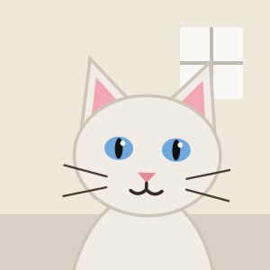
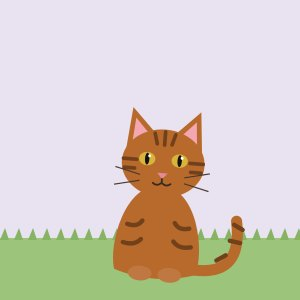
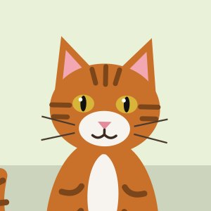
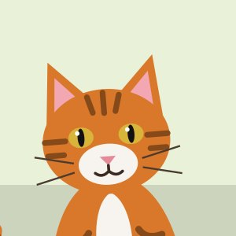
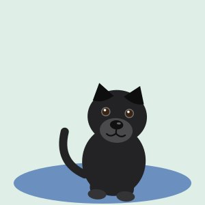
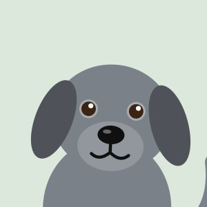
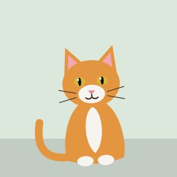
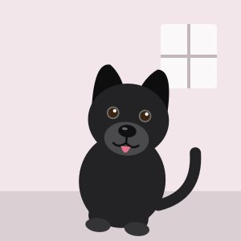
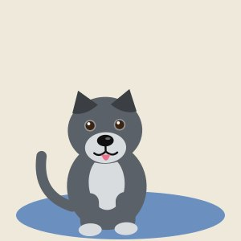
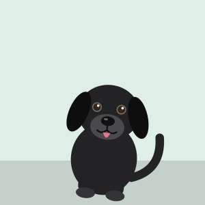
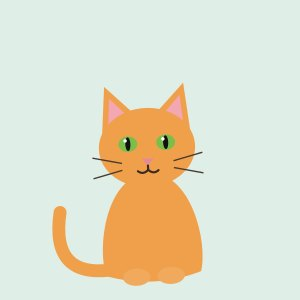
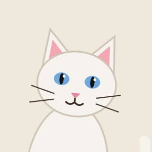
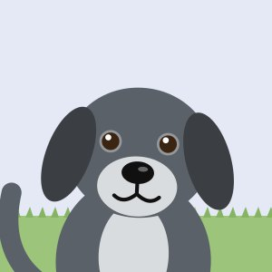
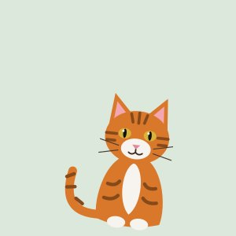
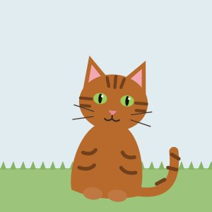
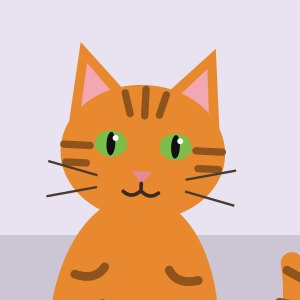
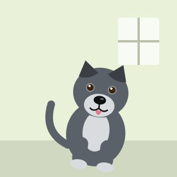
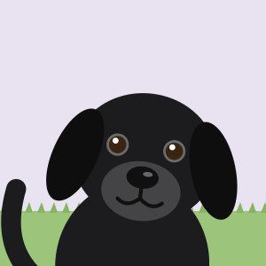
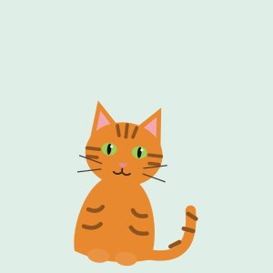
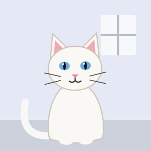
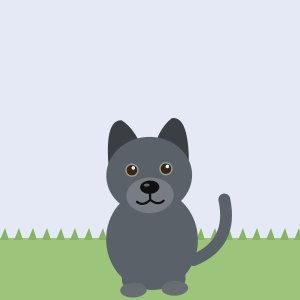
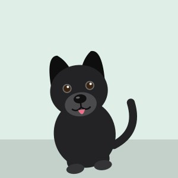
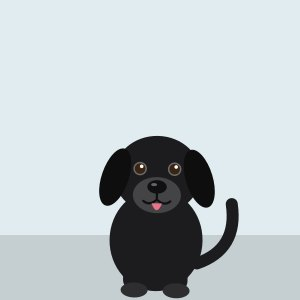
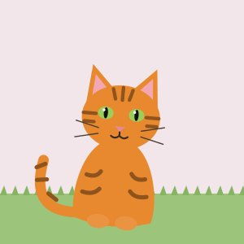
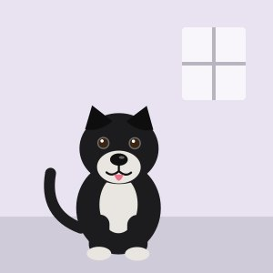
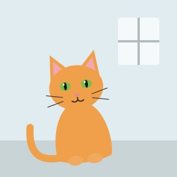
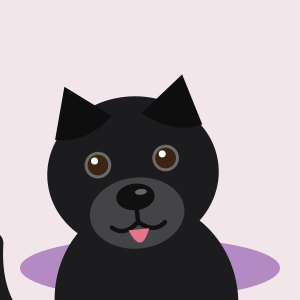
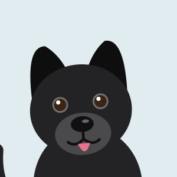
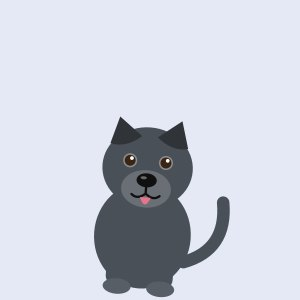
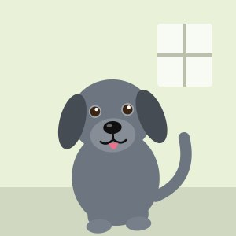
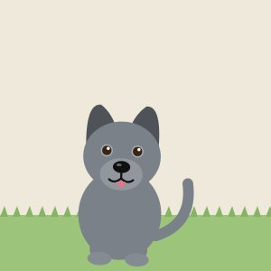
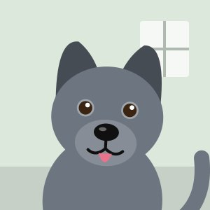
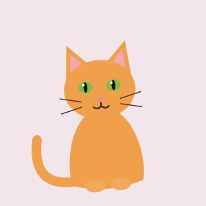
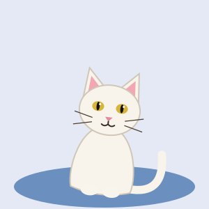
Datos de prueba
Imágenes que el modelo no vio durante el entrenamiento. ¿Las clasifica bien a todas?
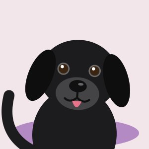
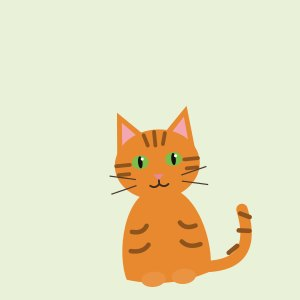
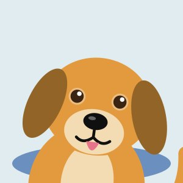
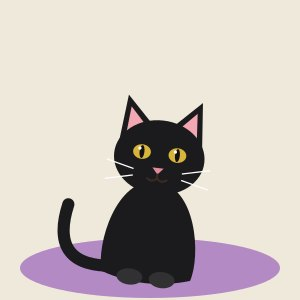
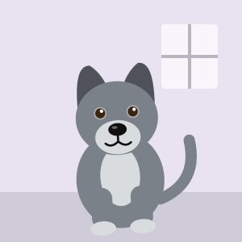
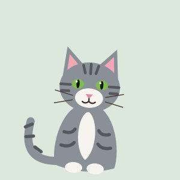
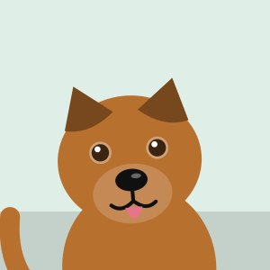
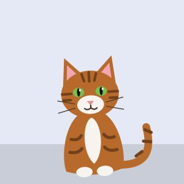